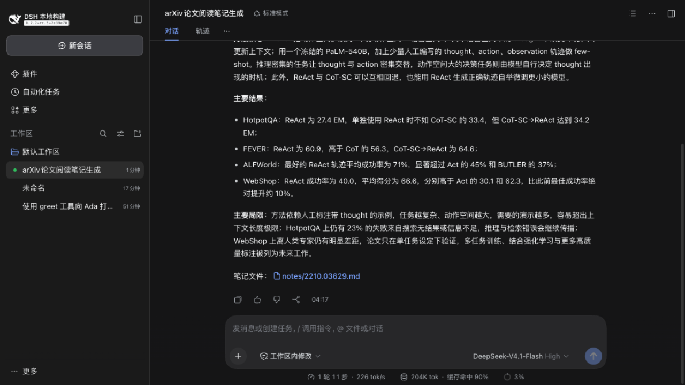

论文领航
挂在 DeepSeek Harness 上的科研阅读插件。从一个题目检索论文，按目录精读，写出带原文依据的笔记；引用对不上就整篇退回。多篇读完之后，按问题、方法、数据、指标和局限对照，而不是再写一篇没有出处的综述。
检索
search_arxiv 按主题找论文，只返回编号和摘要，不一次读完。
search_arxiv 按主题找论文，只返回编号和摘要，不一次读完。
精读
先看目录再挑章节。144 页综述只读进约 3.6 万字符。
先看目录再挑章节。144 页综述只读进约 3.6 万字符。
引用校验
每条 quote 必须逐字命中已读原文。编造的数字写不进笔记。
每条 quote 必须逐字命中已读原文。编造的数字写不进笔记。
对照
compare_notes 只摊开已经落盘的笔记。没写进笔记的数字不许补。
compare_notes 只摊开已经落盘的笔记。没写进笔记的数字不许补。
30 秒看一次真实运行

更多逐步轨迹见演示页；「编造的指标被退回」的真实记录也在那里。
同一题目下的两篇
动平台降落的两篇姊妹论文已经读完。调研页用结构条和指标图把它们摊开。去看对照。点进一篇之后，左边是 PDF，右边是笔记：先看 Transformer。
它解决的问题
让大模型「读论文」时，最大的风险不是总结得不好，而是编造：指标数字、实验设置、数据集名称都可能是幻觉。论文领航把「读」变成一连串可审计的工具调用——模型写的每一句依据都能被机械验证，验证不通过就写不进笔记。
快速体验
cd deepseek-harness
pnpm dsh web --patch /绝对路径/plugin/cordis.yml
# 打开 http://127.0.0.1:3080 ，对话输入：
阅读 arXiv:1706.03762，按 paper 技能产出笔记完整步骤见运行页。插件新会话暂定调用智谱 GLM-5.3-Flash。已发表评测仍是 DeepSeek-V4.1-Flash，选型见模型页。